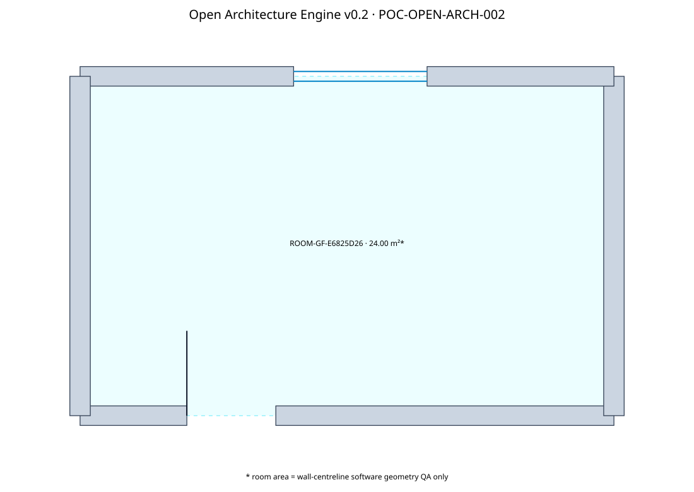

Generated SVG
The exact plan produced by the canonical model.
View plan →The published research milestone demonstrates hosted openings, closed-loop room detection and linked dimensions. These are generated software outputs, not building-design approvals.

The exact plan produced by the canonical model.
View plan →The deterministic CAD linework representing the same geometry.
Open DXF →A JSON glTF file with wall cut-outs; use a glTF-capable viewer for rendering.
Open model →Inspect computed centerline room area, derived dimensions and source hash.
Open manifest →